Créer et vendre une activité
Guide général
Le parcours complet, pas à pas : de la fiche vide à l’activité vendue sur les bornes, le site et au comptoir. Les guides détaillés prennent le relais pour aller plus loin.
Octobre 2026SpaceBowling Engine
Créer et vendre une activité
Le parcours complet, pas à pas : de la fiche vide à l’activité vendue sur les bornes, le site et au comptoir. Les guides détaillés prennent le relais pour aller plus loin.
Le guide suit un exemple du début à la fin : une activité Réalité virtuelle, avec 2 salles et 2 formules. Remplacez les noms, les nombres et les prix par les vôtres.
Sur les captures, ce qu’il faut regarder est entouré en orange et numéroté. Les numéros renvoient aux explications juste en dessous.
Ce guide fait le tour de tout, sans entrer dans chaque détail. Les encadrés orange « Pour aller plus loin » renvoient vers le guide détaillé du sujet ; la liste complète des guides est à la dernière page.
Notez ces informations avant d’ouvrir le CRM : la création ne prend ensuite que quelques minutes.
| À préparer | Dans l’exemple |
|---|---|
| Le nom de l’activité, tel que les clients le liront | Réalité virtuelle |
| Ce qu’on réserve et combien il y en a | 2 salles |
| Combien de personnes dans chacune | Salle Bleue : 4. Salle Rouge : 6 |
| Les formules, leur durée et leurs prix | Session 30 min : 15 € en semaine l’après-midi, 18 € sinon. Session 1 h : 28 € |
| Les jours et heures de réservation | Mercredi, samedi et dimanche dès 14 h ; les autres jours dès 17 h ; dernière séance à 22 h 30 |
| Où on la vend | Site web, bornes et comptoir |
Il faut aussi choisir son fonctionnement. C’est le choix le plus important : il décide de ce que la borne et le site demandent au client.
| Fonctionnement | Pour quoi | Exemples |
|---|---|---|
| À la partie | Des parties par joueur. Le nombre de pistes se calcule selon le groupe. | Bowling, fléchettes |
| À la séance | Des séances à heure fixe. Chaque groupe a sa salle. | Laser game, quiz, réalité virtuelle |
| À la durée, ressource entière | Le groupe loue la salle entière pour une durée. | Karaoké, salle privative |
| Accès libre | Pas de créneau : on ouvre une table libre à la demande. | Billard, arcade |
| Formule combinée | Enchaîne plusieurs activités, avec des options. | Anniversaire |
| Vente simple | Des produits, sans créneau. | Bar, boutique |
Tout se modifie après la création : nom, salles, formules, prix, et même le fonctionnement.
Les six fonctionnements en détail, avec ce que le client voit sur la borne et comment en changer : Guide - Les types d’activité. Pour un anniversaire : Guide - Les anniversaires ; pour le bar : Guide - Le bar.
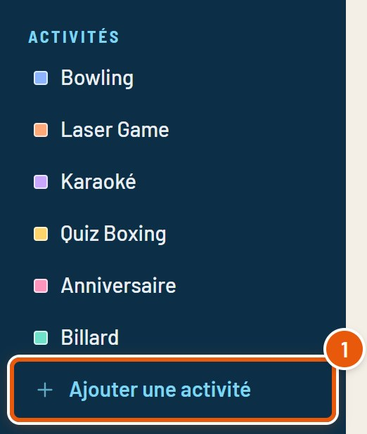
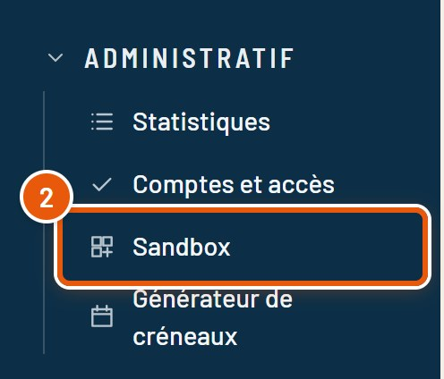
Votre compte n’a pas le droit « Sandbox ». Demandez-le à un responsable (Administratif › Comptes et accès).
Le formulaire se remplit de haut en bas, en trois blocs numérotés.
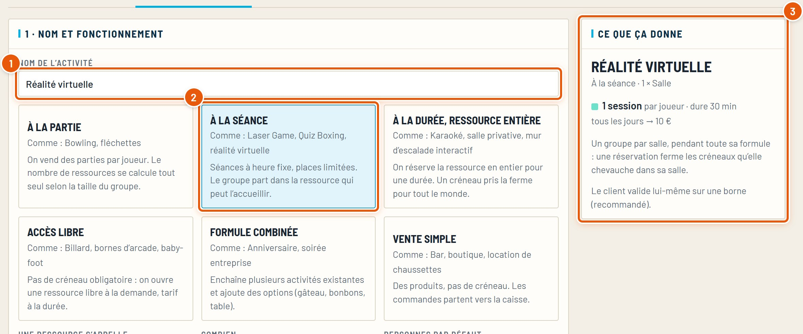
Toujours dans le bloc 1 : ce que le client réserve, combien il y en a, et combien de personnes chacune accueille.
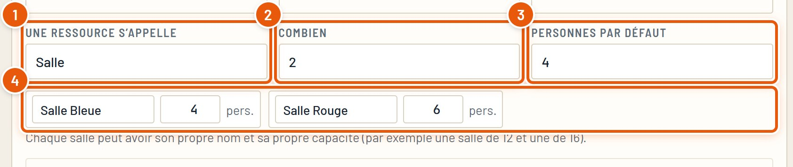
La borne et le site ne proposent jamais plus de personnes que la plus grande salle. Un groupe de 5 ira tout seul dans la Salle Rouge.
Deux réglages en bas du bloc 1. Dans la plupart des cas, gardez « Automatique ».
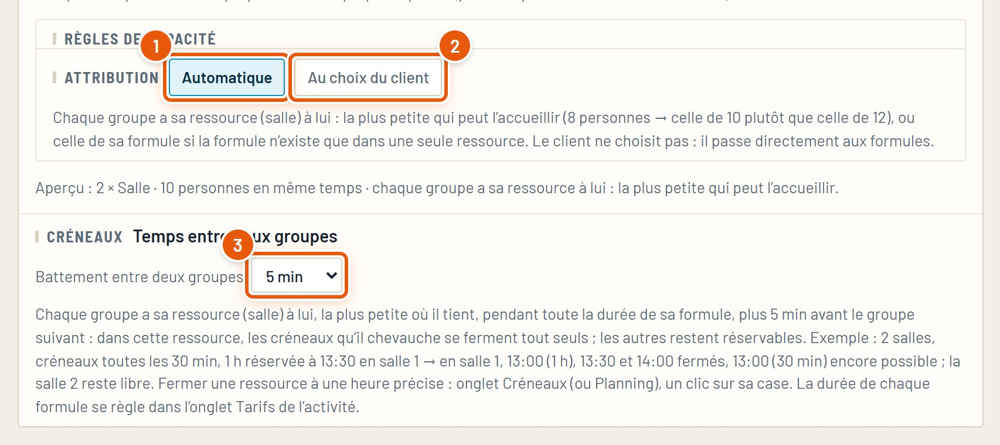
Bloc 2. Une formule, c’est ce que le client achète : un nom, une durée et un prix. Le prix peut changer selon le jour et l’heure.
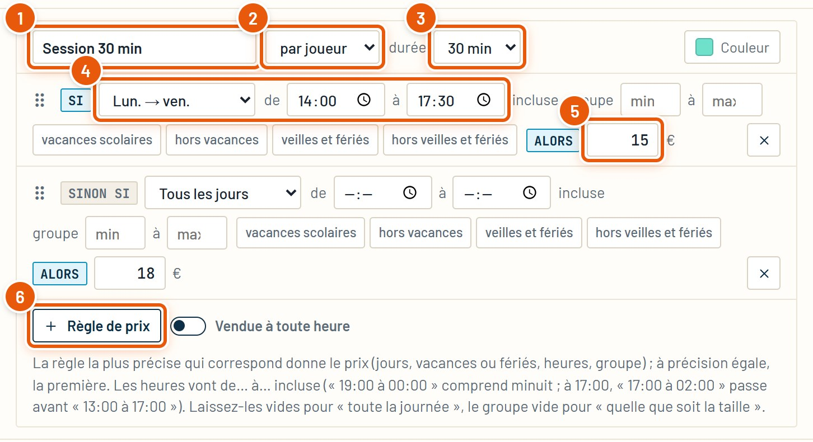
SI du lundi au vendredi de 14:00 à 17:30, ALORS 15 € ; SINON SI tous les jours, ALORS 18 €.
Un mardi à 15 h : 15 €. Un mardi à 19 h ou un samedi : 18 €.
Quand plusieurs règles correspondent, la plus précise gagne. Une règle peut aussi viser une taille de groupe, les vacances scolaires ou les jours fériés (les cases sous les jours).
Tous les réglages des prix (jours, vacances, fériés, heures après minuit, tarifs de groupe, formule vendue seulement à certaines heures), avec des exemples prêts à recopier : Guide - Prix et horaires.
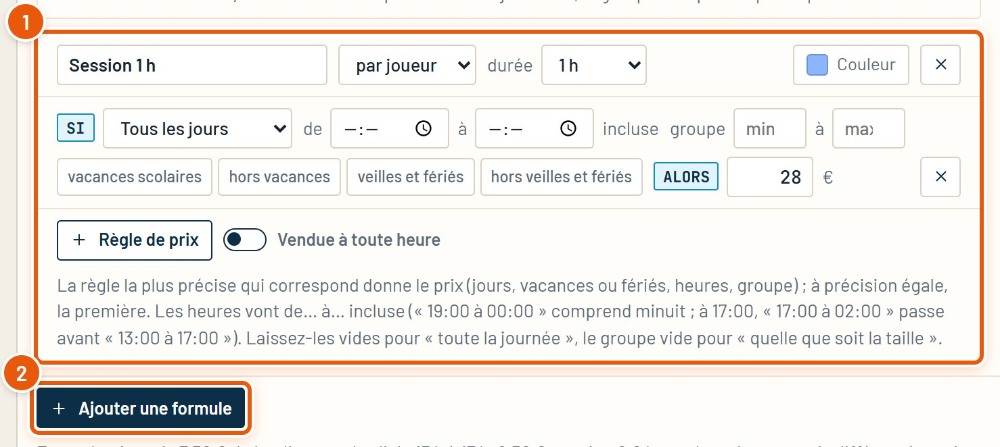
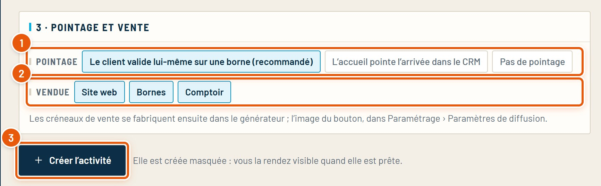
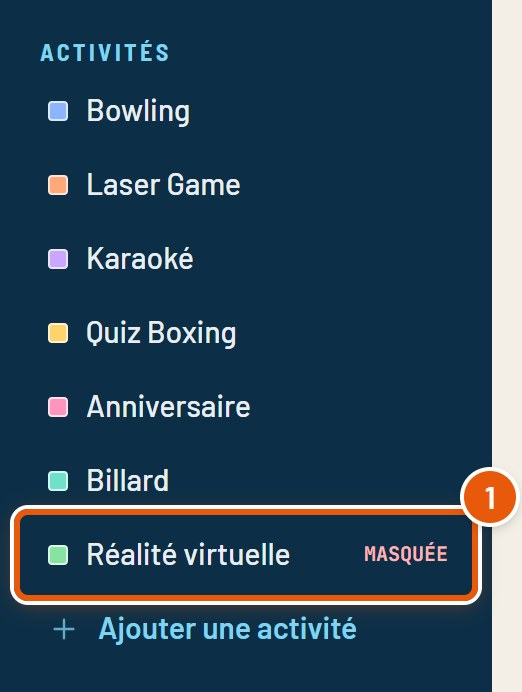
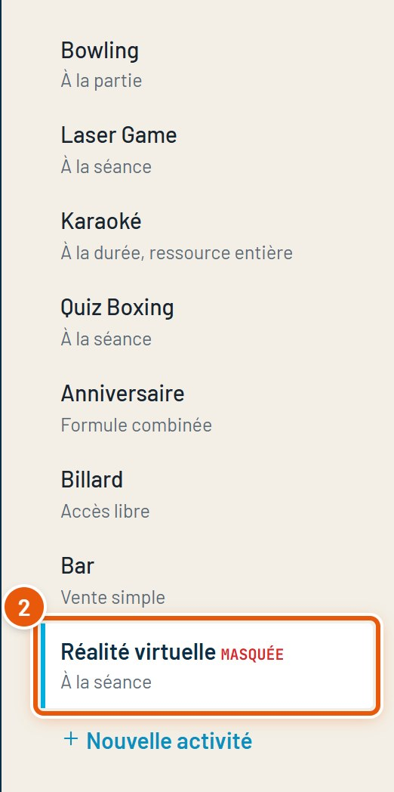
Un template décrit une semaine type : quelles formules, quels jours, de quelle heure à quelle heure. Il se prépare une fois, puis sert à générer les créneaux.
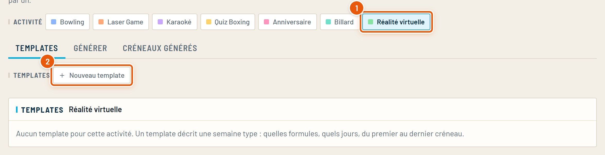
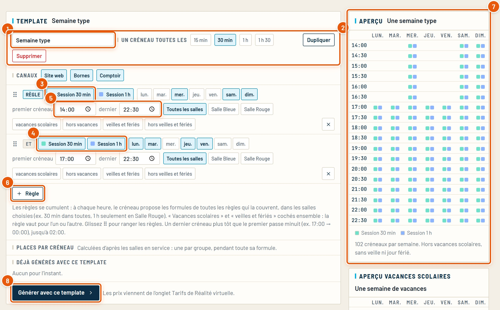
Horaires de vacances, jours fériés, créneaux après minuit, une formule dans certaines salles seulement, fermer une journée ou une heure, prolonger les créneaux : Guide - Prix et horaires.
Le template donne la semaine type ; la génération la répète sur une période. Sans créneaux générés, l’activité ne se réserve ni sur les bornes ni sur le site.
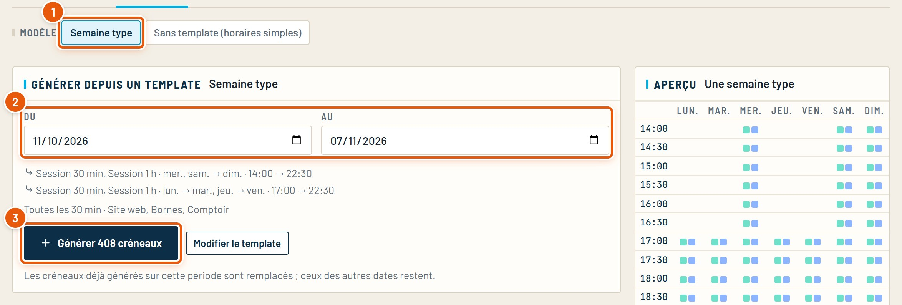
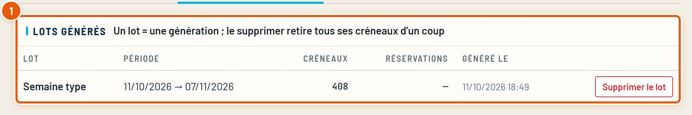
Regénérer une période déjà générée remplace ses créneaux. Les réservations déjà prises sont gardées.
Cliquez sur l’activité dans le menu de gauche. Sa fiche réunit tout ce qui sert au quotidien, en onglets.
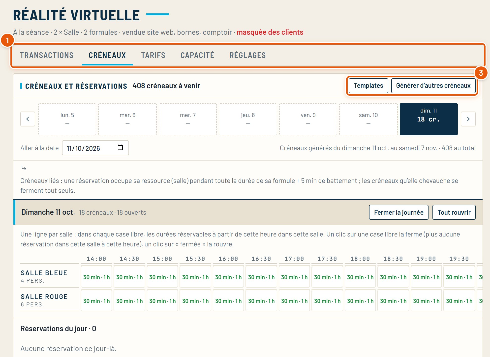
Dans la grille d’un jour, un clic sur une case libre ferme cette salle à cette heure (panne, ménage…). Un clic sur « fermée » la rouvre. Les bornes et le site suivent aussitôt.
Dans l’onglet Tarifs, chaque formule a une ligne Sur la borne : c’est ce qui rend la carte de la formule attrayante pour le client.
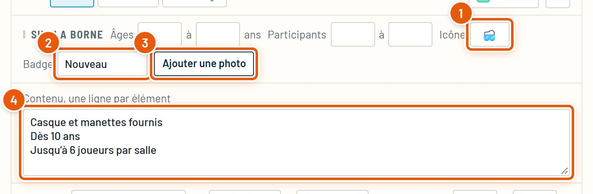
Dans l’onglet Capacité, vous retrouvez les salles : renommer, changer une capacité, ajouter une salle, ou en mettre une hors service (la capacité baisse d’autant, sans rien supprimer).
Le planning, la fiche d’une réservation, décaler ou annuler : Guide - Le quotidien à l’accueil.
Sandbox › Activités du centre › Réalité virtuelle. Le bloc « Module borne » règle les textes de chaque page, avec la borne en aperçu à droite.
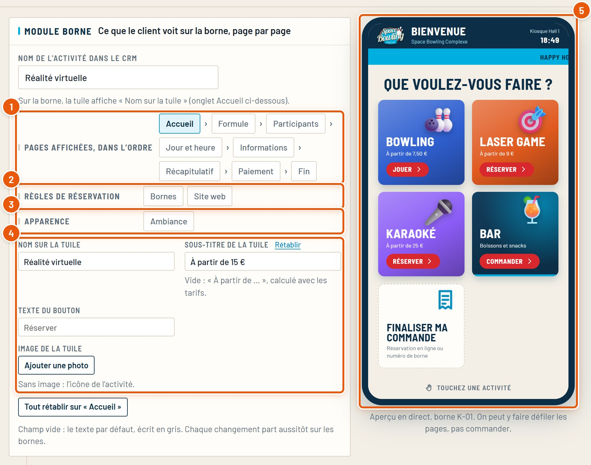
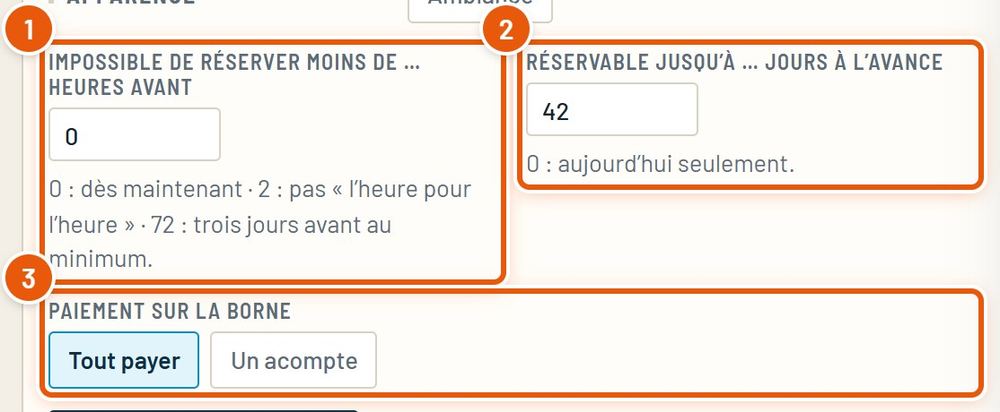
Les styles de page, l’ambiance, l’écran de veille et le paiement sur la borne : Guide - Les bornes. Le parcours en ligne et les comptes clients : Guide - Le site et les clients.
Gestion des bornes › Catalogue des bornes. Une ligne par borne, une colonne par activité.
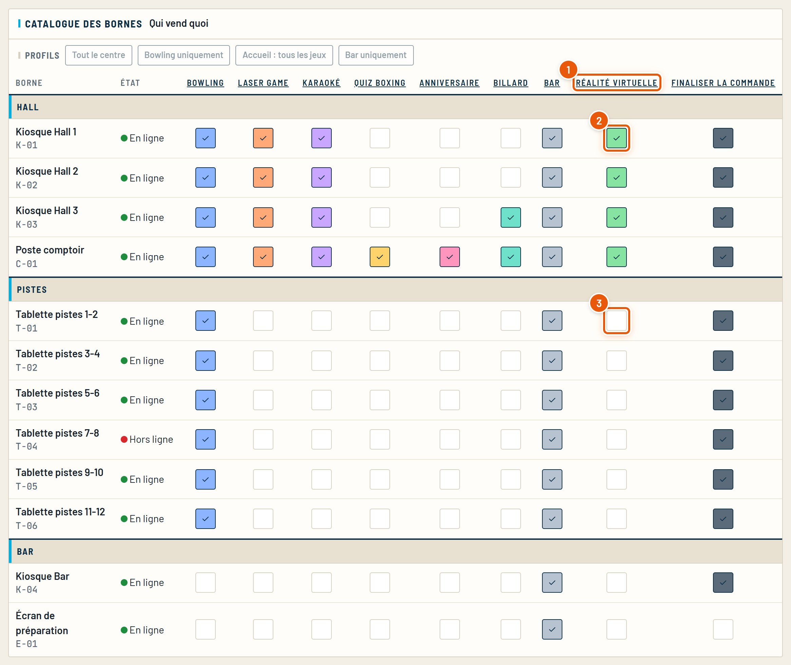
Les boutons Profils (Tout le centre, Bowling uniquement, Accueil : tous les jeux, Bar uniquement) cochent toute une ligne d’un coup : cliquez d’abord sur le nom de la borne dans la colonne de gauche.
Juste en dessous, Disposition de l’accueil règle l’ordre des tuiles, borne par borne et pour le site : choisissez l’écran, puis montez ou descendez l’activité avec les flèches.
Le parc, le monnayeur, « Finaliser ma commande », le mode hors ligne : Guide - Les bornes.
Paramétrage › Paramètres de diffusion › Boutons de l’accueil. C’est la tuile que le client touche sur la borne et le site.
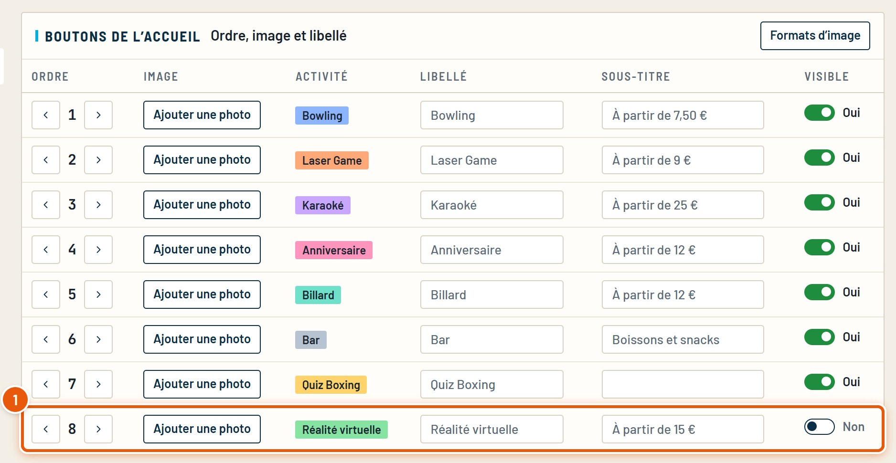
Une photo au format paysage, nette, sans texte dessus. Sans photo, la tuile affiche l’icône de l’activité.
Dernière étape côté CRM : la fiche de l’activité, onglet Réglages, bloc Vente.
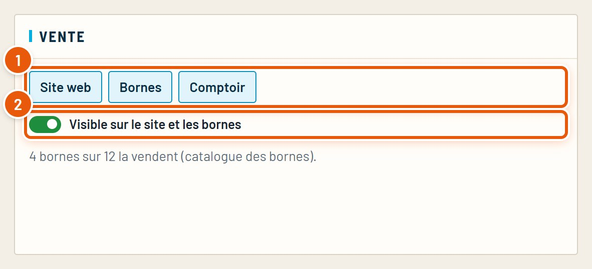
Ouvrez une borne et le site, et faites le parcours comme un client. Allez jusqu’au choix de l’heure, sans payer.
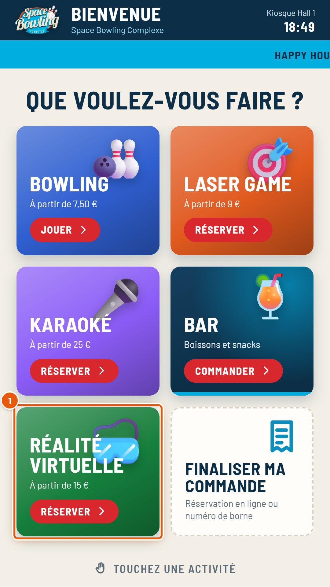
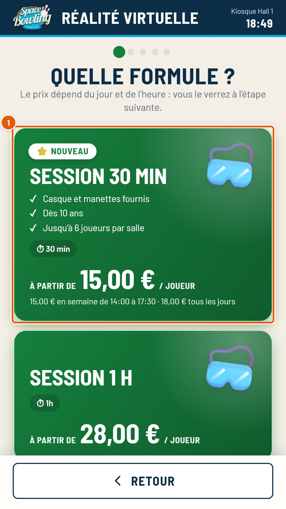
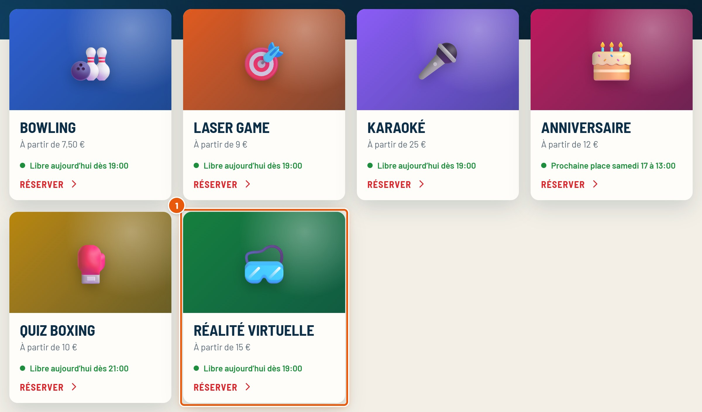
Le parcours complet d’une réservation en ligne : Guide - Le site et les clients.
Les cas les plus courants, et où regarder.
| Ce que vous voyez | À vérifier |
|---|---|
| L’activité n’apparaît pas sur une borne | Elle est visible (Réglages › Vente) ; « Bornes » est actif ; la case de cette borne est cochée (Catalogue des bornes) ; sa tuile est visible (Paramètres de diffusion). |
| Elle n’apparaît pas sur le site | « Site web » est actif dans Réglages › Vente, et elle est visible. |
| « Plus de créneau libre » ou aucune heure | Des créneaux sont générés pour cette période (fiche › Créneaux). La formule est bien dans le template. Le délai minimum et l’horizon (Module borne › Bornes) n’excluent pas ces dates. |
| Une alerte orange « À régler » dans l’onglet Créneaux | Elle dit exactement quoi faire : par exemple une formule renommée qui n’est dans aucun créneau. Bouton « Ouvrir le template ». |
| Le prix n’est pas le bon | Les règles de la formule (Tarifs) : la plus précise gagne. Pensez aux heures, comprises jusqu’à l’heure de fin. |
| Impossible de réserver pour un grand groupe | La capacité de la plus grande salle (Capacité). Un groupe ne se partage pas entre deux salles. |
| La page Salle s’affiche alors qu’on ne veut pas | Règles de capacité : repassez en Automatique (Sandbox › l’activité). |
Toutes les modifications sont en direct : pas besoin de « publier ». Après un changement, la borne et le site se mettent à jour d’eux-mêmes.
Tous les guides du CRM, refaits à partir du vrai logiciel. Ils se trouvent dans le dossier docs.